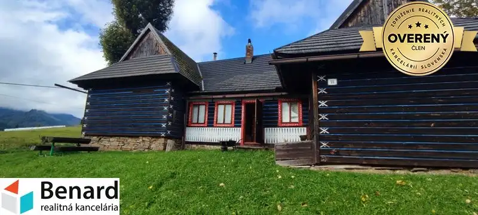
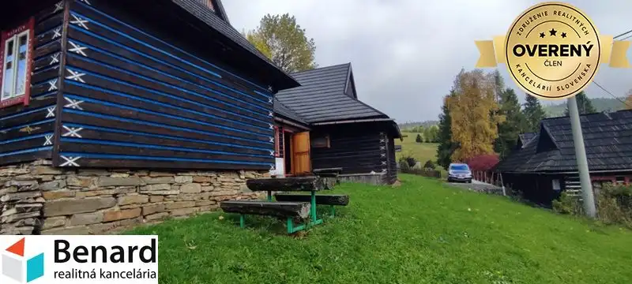
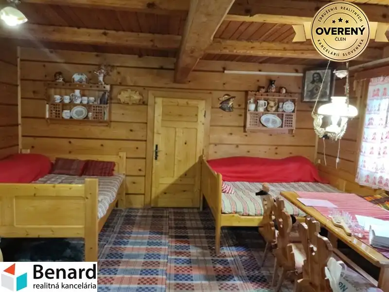
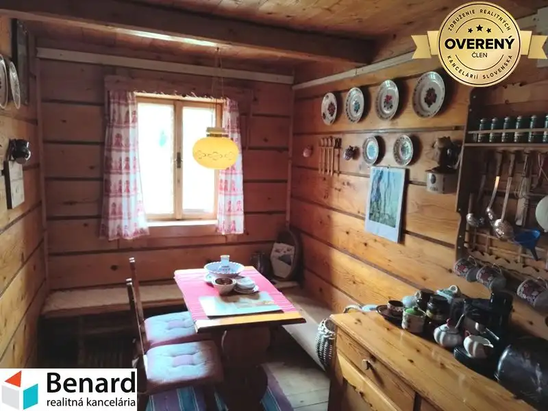
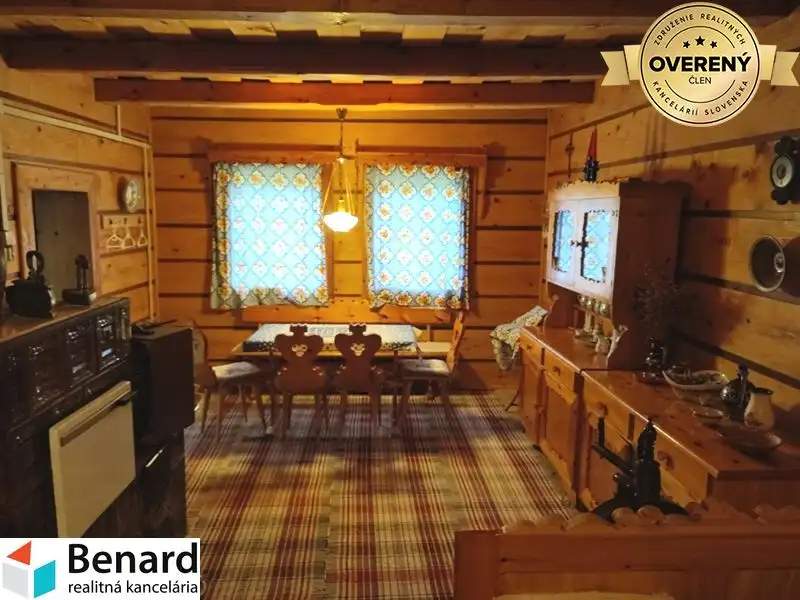

CHALUPA 190 m2, NA POZEMKU 637 m2, ŽDIAR
Ždiar





- Dispozícia6-izbový
- Plocha150 m²
- Poschodie0. z 1
- Stavpôvodný
- Vlastníctvoosobné
O nehnuteľnosti
Túžite vlastniť typickú ždiarsku chalupu s nádherným výhľadom, v rázovitej obci, obklopenej nádhernou prírodou? Táto nehnuteľnosť je ako stvorená pre Vás. Chalupa, postavená cca v roku 1945 je jednopodlažná a stojí na polosamote nad dedinou. Zastavaná plocha a nádvorie je 190 m2 a pozemok okolo chalupy je o výmere 447 m2. K výmere ešte prislúcha podiel na prístupovej ceste.
Chalupa pozostáva:
- vstupná veranda, kuchyňa, kuchynský kút, obývacia izba so spálňou, 5x spálňa, kúpeľňa s WC, samostatná kúpeľňa a WC, komora a dreváreň,
- okolie domu: trávnatá plocha,
Základné informácie:
- celková rozloha pozemku 637 m2 + podiel na prístupovej ceste,
- úžitková plocha cca 150 m2,
- chalupa je v osobnom vlastníctve,
- konštrukcia je drevená, sedlová strecha s plechovou strešnou krytinou (škridľoplech), drevené okná, podlahy v obytných miestnostiach doskové, v kúpeľni a WC keramická dlažba,
- dom je napojený na elektriku, voda je zo studne,
- kúrenie je zabezpečované elektrickými radiátormi a kachľovými pecami,
- teplá voda je zabezpečovaná elektrickým prietokovým ohrievačom vody,
- chalupu ponúkame zariadenú,
V obci sa nachádza pošta, obchod so zmiešaným tovarom, reštaurácie a penzióny, lyžiarske strediská.
Ak máte záujem o obhliadku, prípadne potrebujete viac informácii, nájdete nás v realitnom centre na Slovenskej 8 v Prešove, alebo na tel.č. .
ZADARMO K TEJTO NEHNUTEĽNOSTI DOSTANETE:
Ø preverenie právneho stavu a tiarch danej nehnuteľnosti;
Ø vysvetlenie problémov záložných tiarch, vecných bremien a pod.;
Ø právny servis zabezpečený právnikom s dlhoročnými skúsenosťami;
Ø kópiu LV prípadne katastrálnej mapy s kolkom na právne účely;
Ø poplatky za overenie podpisov na zmluvách u notára;
Ø správny poplatok za vklad vlastníckeho práva do katastra vo výške 100,-€
Ø realitné, daňové a právne poradenstvo;
Ø zabezpečenie znalca na vypracovanie znaleckého posudku;
Ø vypracovanie ponúk na zabezpečenie úveru u nášho finančného poradcu, ktorý
spolupracuje so všetkými bankami,
Parametre
- Zastavaná plocha
- 190 m²
- Celková rozloha
- 637 m²
- Úžitková plocha
- 150 m²
- Poschodie
- prízemie
- Počet poschodí
- 1
- Počet izieb
- 6
- Vlastníctvo
- osobné
- Stav
- pôvodný
- Status
- aktívne
- Voda
- studňa
- El. napätie
- 230/400V
- Plyn
- nie
- Kanalizácia
- nie
- Kúpeľňa
- sprchovací kút
- Vykurovanie
- vlastné – kombinované
- Pivnica
- nie
- Garáž
- nie
- Parkovanie
- vonkajšie
- Postavené z
- drevostavba
- Zariadenie
- zariadený
- Zateplený objekt
- nie
- Strecha
- po rekonštrukcii
- Energetický certifikát
- nie
- Okná
- drevené
- Terén
- mierny svah
- Prístupová cesta
- neupravená cesta
- Dátum zverejnenia
- 2026-01-26